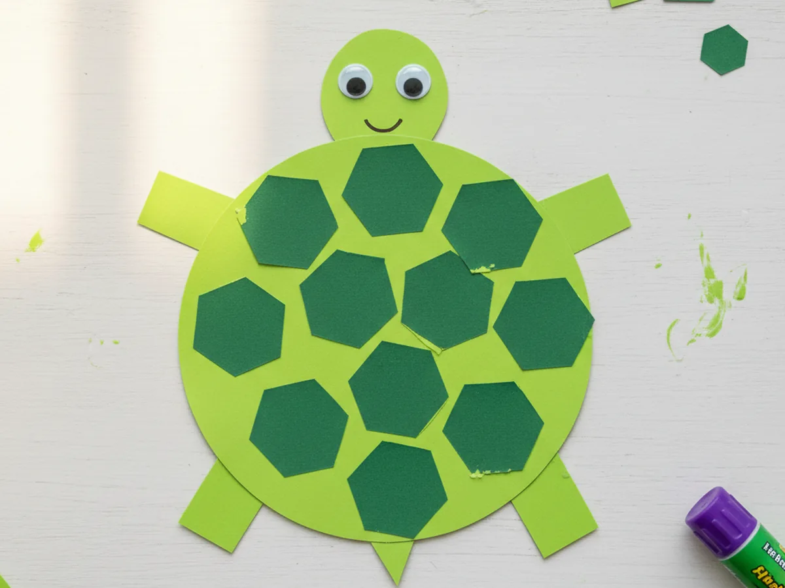
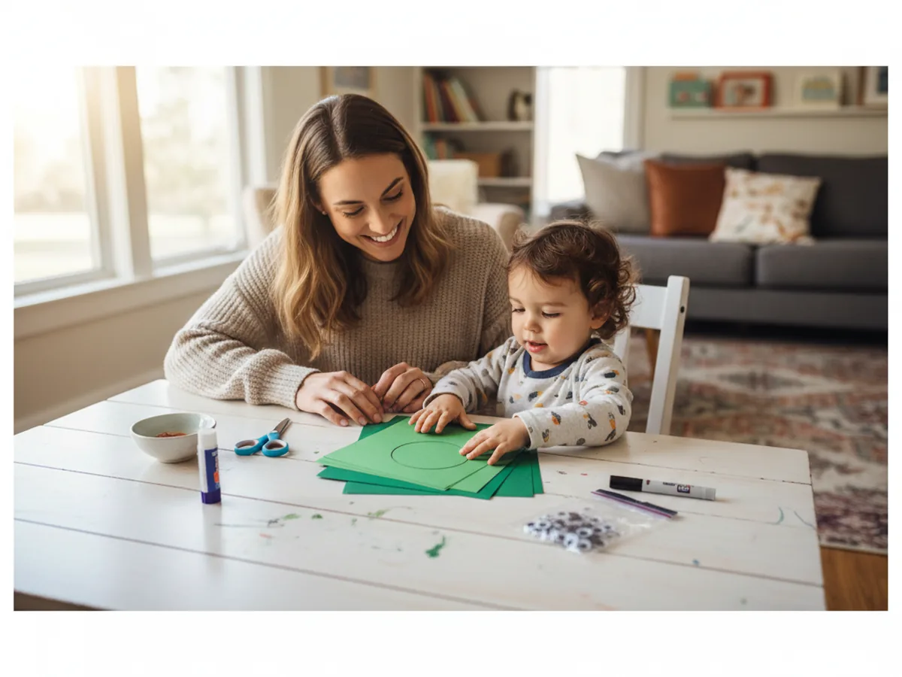
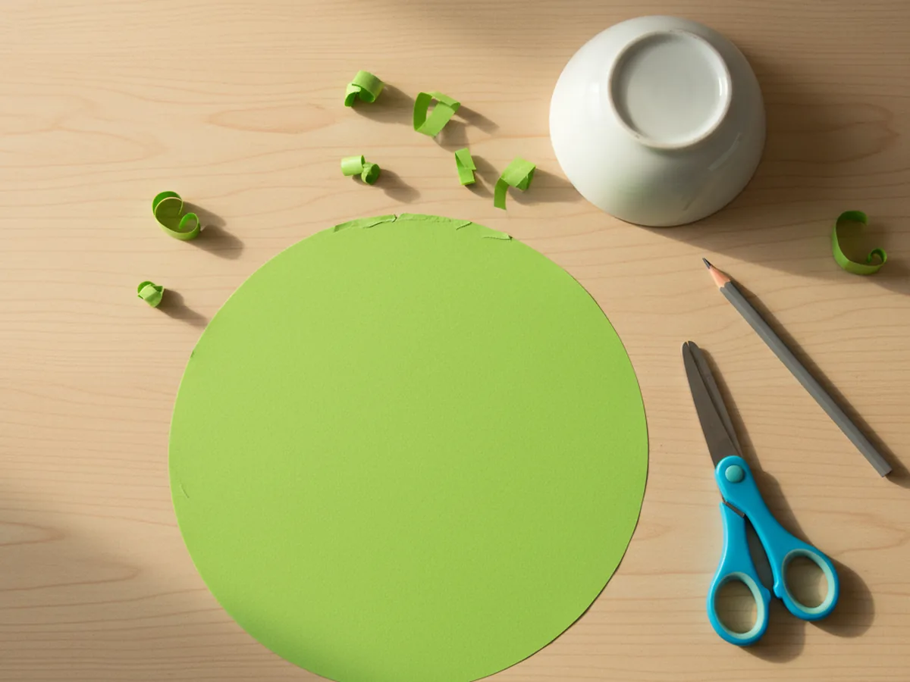
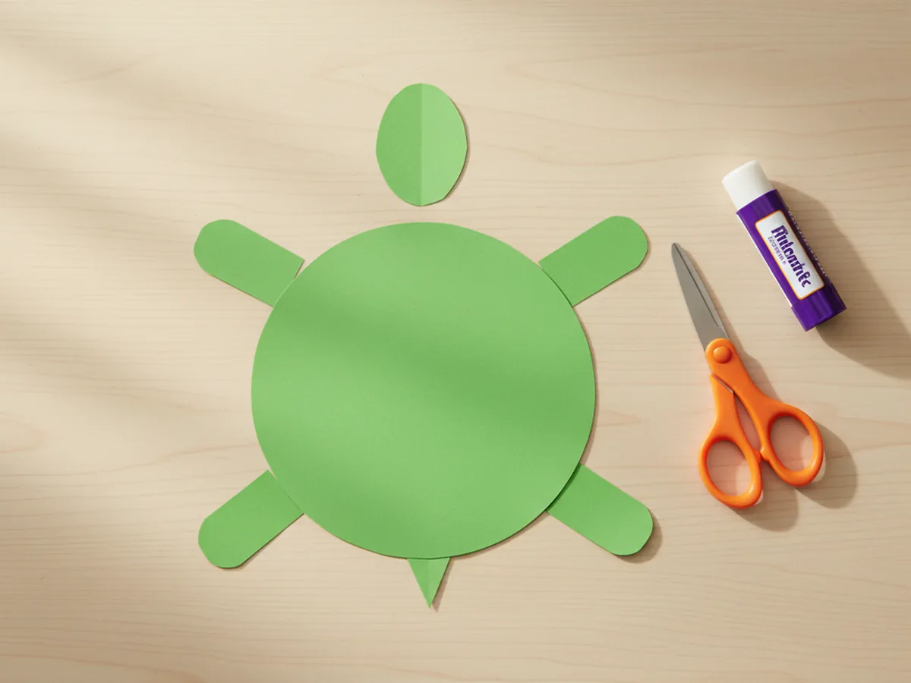
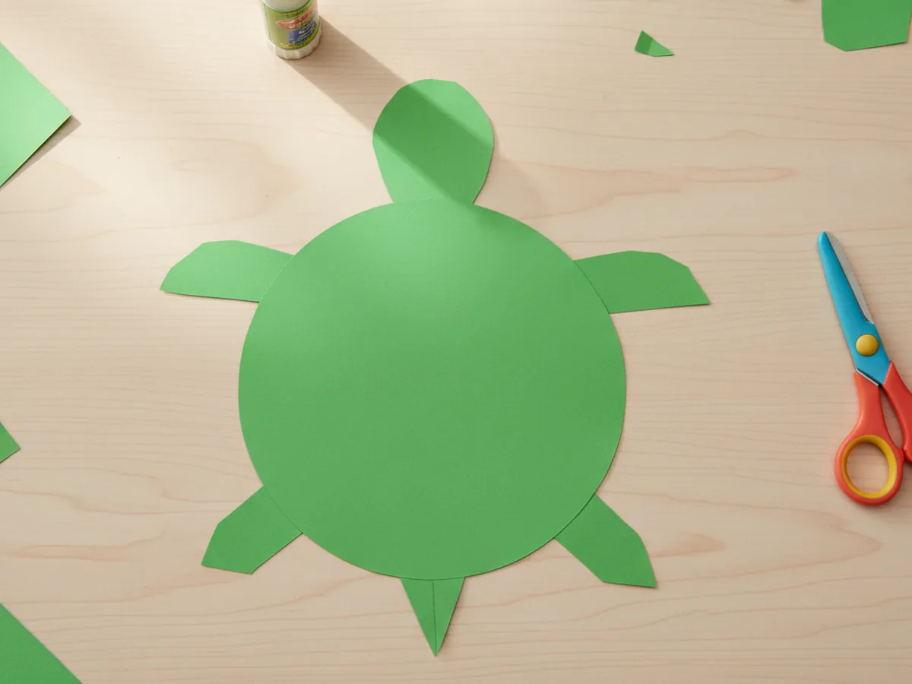
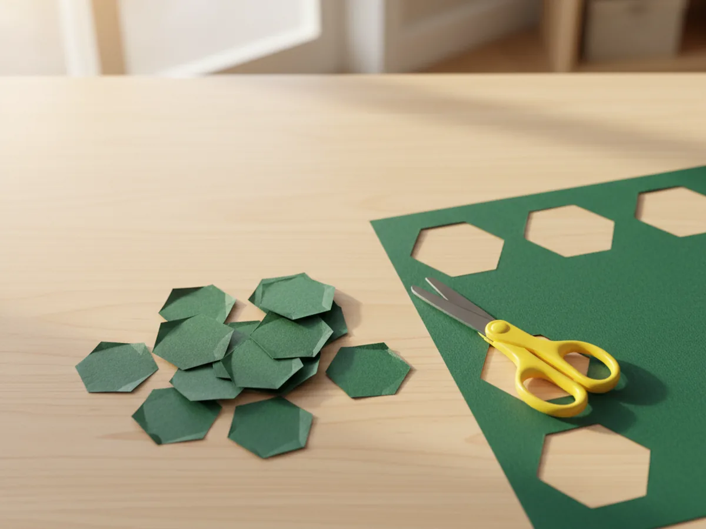
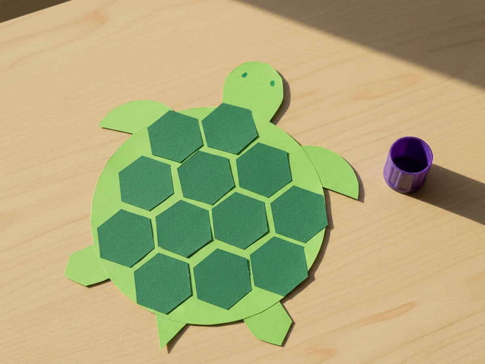
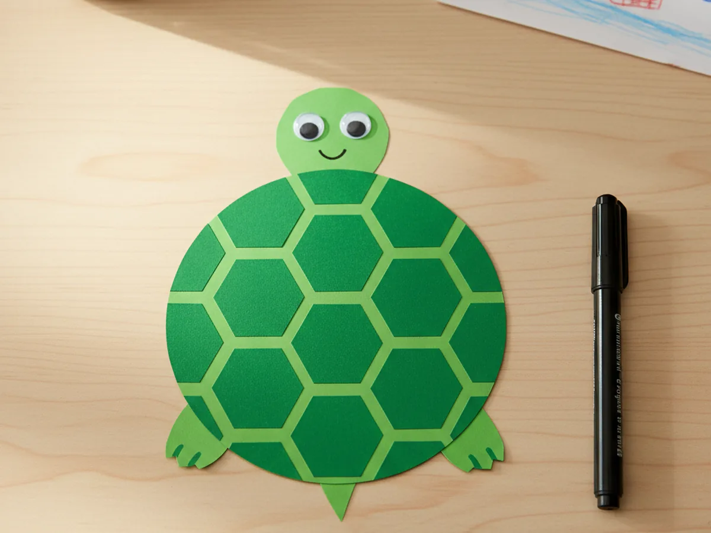
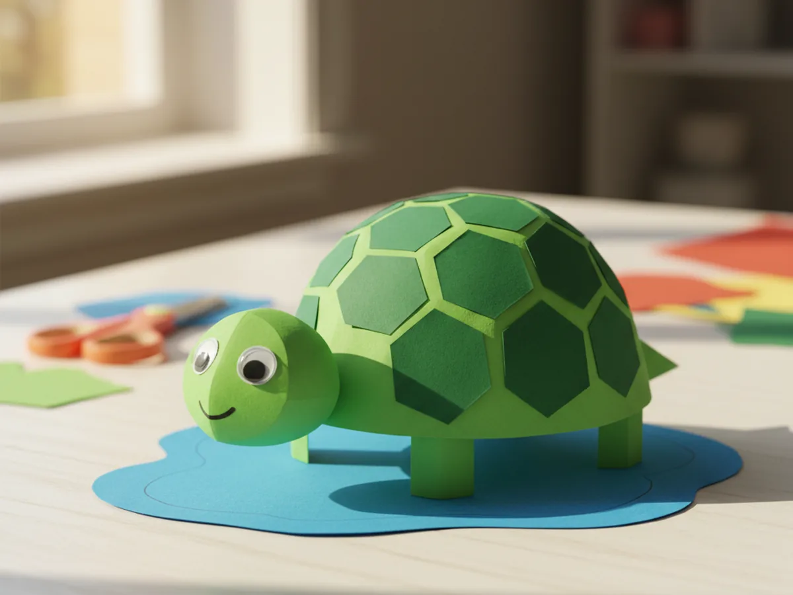

If you have a little one who loves animals, this paper turtle craft is going to be a sweet hit at your kitchen table. With nothing more than green construction paper, scissors, glue, and a couple of googly eyes, you and your child can put together the cutest little turtle in about 30 minutes. The shape comes together quickly, the hexagon shell pattern feels like real magic to a kid, and the finished turtle looks ready to crawl right off the table. 🐢
This easy paper turtle craft is the kind of cozy, low-mess project you can pull out on a rainy afternoon, a quiet weekend morning, or after a busy school day when everyone needs a calm moment. There is no paint, no glitter, and no complicated cutting. Just a few simple shapes, a tiny bit of gluing, and a finished turtle your child will want to name and carry around for the rest of the week.
Why Kids Love This Craft
There is something extra special about turtles for little kids. The slow, friendly shape, the sweet face, the patterned shell all feel safe and lovable, and that emotional connection makes this craft go much further than a quick activity. Kids almost always end up giving their finished turtle a name and tucking it onto a shelf with their other favorite things.
This simple paper turtle craft is also wonderful for fine motor practice. Cutting the round shell, snipping the small hexagon spots, and lining up the legs behind the body all build hand strength and concentration in a way that feels like play, not practice. Kids who are still mastering scissors get a forgiving project to grow on, and confident little crafters get to try a slightly trickier hexagon pattern they can feel proud of.
And the assembly moment is the real win. Watching the flat green pieces become a recognizable little turtle in just a few minutes always lights up a child's face. Your little one will hold up the finished paper turtle and say "Look, Mommy!" and that is the moment this whole craft is really about. 💛

What You'll Need
Here is everything you need for this paper turtle craft tutorial. Lay the supplies out on the table before you start so your little one can dive in without waiting around.
- Crayola Construction Paper (240 sheets, assorted colors), gives you both the bright green for the body and a darker green for the shell hexagons.
- Fiskars Pointed-Tip Kids Scissors, easy for small hands to control on round and hexagon shapes.
- Elmer's Disappearing Purple Glue Sticks (30 pack), washable and dries clear, perfect for sticking the legs and shell pieces.
- CCINEE Self-Adhesive Wiggle Eyes (1150 pieces, assorted sizes), peel-and-stick googly eyes that make the turtle face come to life instantly.
- Crayola Broad Line Markers (10 classic colors), for drawing the smile and any little face details.
- A pencil, for sketching the shell circle and hexagon shapes before cutting.
- A small plate or bowl, for tracing a perfectly round shell.
Step-by-Step Instructions
This paper turtle craft moves through seven friendly steps that build naturally on each other. Take your time, follow along together, and let your child do as much of each step as they comfortably can.
Step 1: Cut the Round Turtle Shell
Start with a sheet of bright green construction paper for the shell. Place a small plate or bowl upside down on the paper and trace around it with a pencil to draw a clean circle, about the size of a saucer. Cut the circle out carefully with kid-safe scissors. This big green circle is the heart of the paper turtle craft, and it sets the size for everything else.

Step 2: Cut the Head, Legs, and Tail
From the same green paper, cut a small oval shape about the size of a walnut for the turtle's head. Then cut four short little rectangles with rounded ends for the legs, each about the length of your child's pinky finger. Finally, snip a tiny triangle for the tail. These five small pieces will pop out from behind the shell to make the turtle look like a turtle.
Lay the head, legs, and tail out around the green circle in their final positions before gluing anything down. This little dry run helps your child see how the shapes fit together and gives them a chance to nudge things until they look just right.

Step 3: Glue the Body Parts Behind the Shell
Now flip the green shell circle over so the back is facing up. Add a small dab of glue stick to one end of each body piece, then press it onto the back of the shell so just the head, legs, and tail peek out around the edges. The head goes at the top, the tail goes at the bottom, and the four legs sit roughly at four-and-eight, two-and-ten clock positions.
Press each piece down firmly for a few seconds so the glue grabs hold. When you flip the shell back over, you will already see a sweet little turtle shape smiling up from the table. This is one of those magic paper turtle craft moments where suddenly the project clicks together. ✨

Step 4: Cut the Hexagon Shell Spots
Take a piece of darker green construction paper and cut about ten small hexagons, each roughly the size of a quarter. They do not have to be perfect six-sided shapes. Wonky little hexagons add to the handmade charm and look exactly like the patches on a real turtle shell.
If hexagons feel tricky for younger kids, small circles or rounded squares work just as beautifully. The goal is a row of friendly green spots, not geometry homework.

Step 5: Glue the Hexagons Onto the Shell
Spread a thin layer of glue on the back of each hexagon and press it onto the bright green shell. Start with one hexagon in the center, then build out around it with the others, leaving a little space between each piece so the bright green base shows through like the lines on a real shell. Keep going until the whole shell looks pleasantly speckled.

Step 6: Add the Eyes and Smile
Peel the backing off two small googly eyes and stick them near the top of the green head. Step back and let your child decide how close together they should sit, since this single choice changes the whole personality of the turtle. Then take a black marker and draw a tiny curved smile right under the eyes.
This is the moment the turtle truly comes alive, and most kids gasp a little. If you have time, add two pink cheek dots with a marker for an extra-sweet face.

Step 7: Let It Dry and Display
Set the finished turtle aside on a flat surface for a few minutes so the glue can fully set. While you wait, this is the perfect moment to ask your child what they want to name their paper turtle. Once everything is dry, the turtle is ready to be proudly displayed on the fridge, taped to a bedroom wall, or carried around the house all afternoon.
You can even make a tiny pond out of blue construction paper for the turtle to sit on. The display is half the joy of any handmade craft, and your little one will love having a finished friend to show off to the rest of the family. 🎨

Variations to Try
Sea Turtle Version: Swap the bright green shell for shades of blue and teal, and use lighter blue hexagons for the spots. Glue the finished sea turtle onto a piece of dark blue paper with a few white wave squiggles to create a little ocean scene your child can hang on the wall.
Tissue Paper Mosaic Shell: Skip the hexagons and let your child tear small pieces of green and yellow tissue paper, then glue them onto the shell for a soft, textured mosaic look. This version is wonderful for toddlers who are not quite ready for scissor work yet.
Paper Plate Turtle Family: Make a whole turtle family by repeating the craft with paper plates instead of cut circles. Use a big plate for the mama turtle, a medium plate for the papa, and small bowls for the babies. Display the family together for a sweet keepsake.
Final Thoughts
This paper turtle craft is one of those quietly perfect projects that gives you a calm shared moment with very little setup or cleanup. The supplies are simple, the steps are forgiving, and the finished turtle looks far cuter than the small effort suggests. Whether you display it on the fridge, gift it to a grandparent, or send it to school for show-and-tell, you both walk away with a sweet handmade keepsake and a happy memory of the afternoon you made it together.
If your child finishes their first paper turtle, I would love to see it. Save this article on Pinterest so other craft-loving mamas can find it easily. Happy crafting!
More Crafts You'll Love
If your little one enjoyed this paper turtle craft, they will love these other gentle animal projects too: